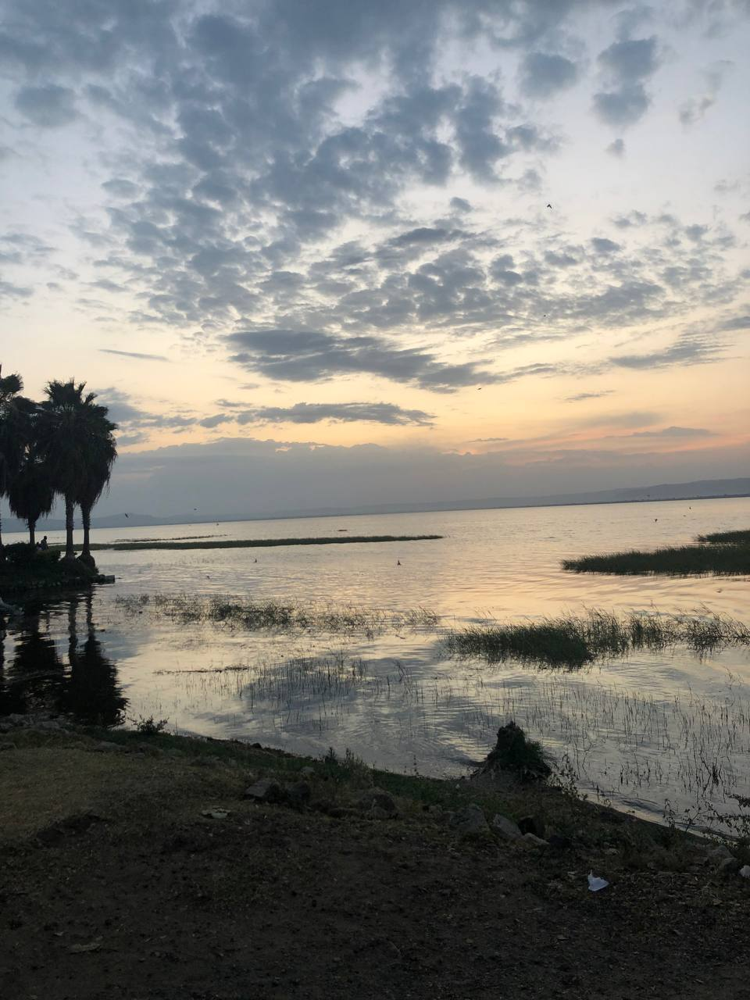
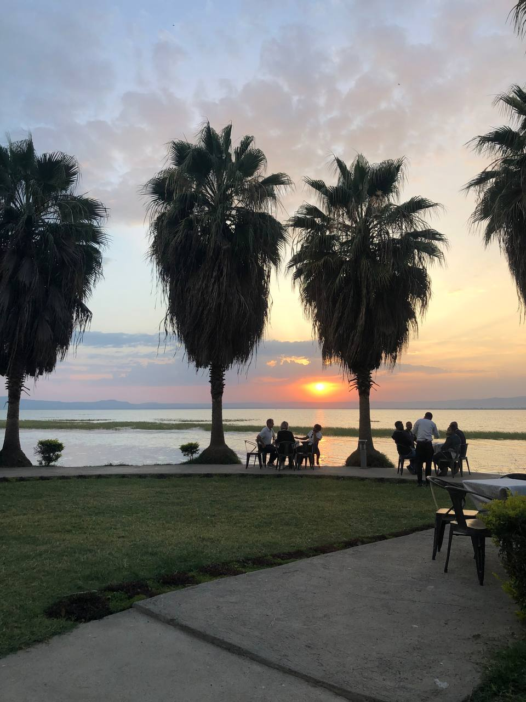
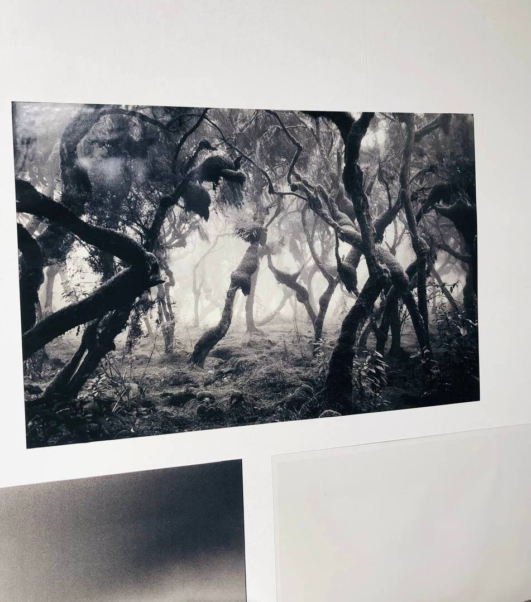

Tranquil Twilight: Sunset Reflections on Hawassa Lake
Immerse yourself in the stunning beauty of Hawassa Lake at sunset, where the sky
transforms into a canvas of vibrant colors. As the sun dips below the horizon, its
warm hues dance on the water's surface, creating a serene reflection that captivates
the soul. This picturesque moment not only highlights the natural beauty of the lake
but also offers a peaceful escape for nature enthusiasts and travelers seeking the
tranquility of Ethiopia's scenic landscapes. Experience the magic of dusk on Hawassa Lake,
where every sunset tells a unique story.

Hawassa Lake: A Tranquil Oasis for Recreation and Relaxation
Hawassa Lake is a true gem in the heart of Ethiopia, offering visitors a captivating
blend of natural beauty and serene ambiance. As the sun dips below the horizon, its
warm hues cast a mesmerizing reflection on the lake's surface, creating a breathtaking
spectacle that captivates the soul.Whether you're seeking a peaceful escape from the
hustle and bustle or an opportunity to immerse yourself in the natural wonders of Ethiopia,
Hawassa Lake is undoubtedly one of the best places in the country to experience the beauty
and tranquility of the great outdoors. As the sun sets and the lake's reflection dances under
the evening sky, visitors can't help but be captivated by the sheer serenity and charm of this
truly remarkable destination.

Ethereal Shadows: Exploring the Mystical Forest
The haunting image before us transports us to a realm of ethereal enchantment,
where the boundaries between the physical and the metaphysical blur. Shrouded
in an eerie mist, the ancient forest stands as a testament to the enduring power
of nature, its twisted branches and gnarled trunks casting a web of intricate shadows
that captivate the viewer.This image is a testament to the breathtaking power of nature and
the boundless imagination of the human mind. It challenges us to see the world through a new
lens, to embrace the enigmatic and the unexplained, and to surrender ourselves to the captivating
allure of the natural world in all its mystical splendor.

Bob Marley's Timeless Melodies
Blogs
Majestic Peaks and Verdant Vales: Exploring Ethiopia's Simien Wonders
Nestled in the heart of Ethiopia, the Simien Mountains rise majestically, offering
a breathtaking display of natural wonder that captivates all who behold it. This stunning
landscape, a UNESCO World Heritage site, is a true testament to the power and beauty of the
natural world, showcasing Ethiopia's remarkable geographical diversity.As clouds drift lazily
across the vibrant blue sky, the sunlight filters through, casting a magical glow over the Simien
Mountains, highlighting the rich hues of the vegetation and the intricate patterns of the rock formations.
This breathtaking scene evokes a sense of timelessness, inviting visitors to immerse themselves in the
serene beauty of one of Ethiopia's most cherished natural treasures.Whether you're a seasoned hiker, a nature
enthusiast, or simply someone in search of a moment of tranquility and inspiration, the Simien Mountains
offer an unparalleled experience, where the grandeur of the landscape and the splendor of the natural world
converge to create a truly unforgettable destination.
A Feline's Playful Delight: Fascinating Facts about Cats
Captured in this delightful image is a mischievous feline, its eyes bright with excitement and its mouth
open in a playful yawn. The cat's fluffy, multi-colored coat contrasts beautifully with the textured,
granite-like surface it sits upon, creating a captivating visual interplay.This charming snapshot serves
as a reminder of the simple joys that can be found in observing the curious and playful behaviors of our
feline companions. However, cats are not just delightful pets - they are fascinating creatures with a rich
history and unique characteristics. For instance, did you know that cats have been domesticated for over
4,000 years and were revered as sacred animals in ancient Egypt? Additionally, cats have incredible senses,
with the ability to see in the dark and hear sounds at higher frequencies than humans. Whether it's a cherished
household pet or a chance encounter with a furry friend, moments like these offer a delightful respite, reminding
us to pause, appreciate the present, and embrace the genuine delight that animals can bring into our lives.
By learning more about the fascinating world of cats, we can cultivate a deeper appreciation for these captivating
creatures and the important role they play in our lives.
Unveiling the Future: The Transformative Power of Artificial Intelligence
In this captivating image, we are presented with a glimpse into the boundless possibilities of
artificial intelligence (AI). Held within the palm of a human hand, a glowing orb represents
the convergence of advanced technologies, data, and computational power that is shaping the
future before our very eyes.AI, once the realm of science fiction, has now become a reality,
empowering us to tackle complex challenges, unlock new frontiers of knowledge, and enhance our
everyday experiences in ways we may have never thought possible.This image serves as a powerful
reminder of the transformative power of AI and the responsibility we have to harness this technology
in a way that benefits humanity as a whole.s we stand at the cusp of this AI-powered future, we are
called to navigate this landscape with a keen awareness of both the promises and the perils. By embracing
the opportunities presented by AI while also addressing its ethical considerations with care and foresight,
we can shape a future that is not only technologically advanced but also socially responsible, inclusive,
and aligned with the well-being of humanity as a whole.The future that lies before us is one of boundless
potential, where the fusion of human ingenuity and artificial intelligence can propel us towards unprecedented
breakthroughs and a more prosperous, sustainable world. By engaging with this transformative technology with
wisdom and a steadfast commitment to the greater good, we can harness the power of AI to create a future that
is brighter, more equitable, and truly transformative for all.